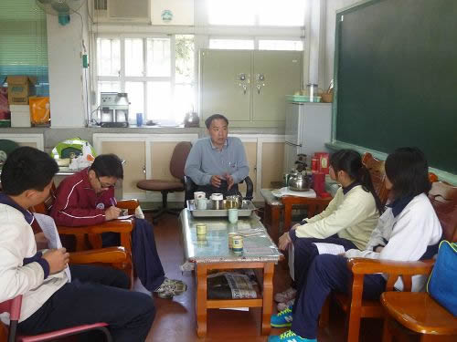
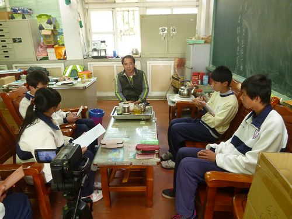
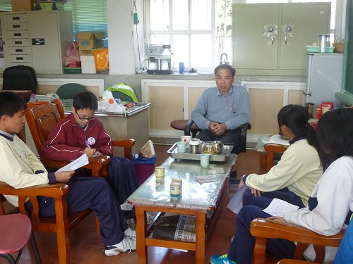
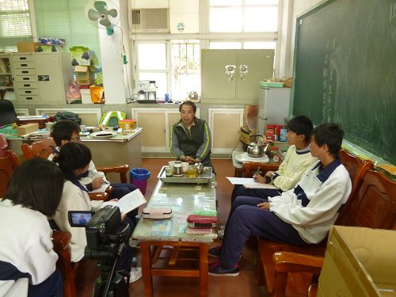
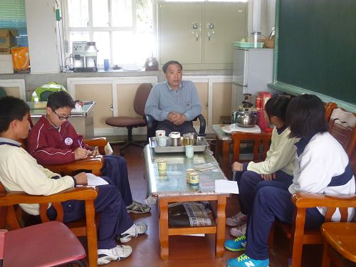

|
|
Interview >Teacher Huang
The reason why we're interviewing Teacher Huang was that we wanted to understand more about person, traditional art as well as the Hsienhsi Community construction project. We spent a great deal of effort, time and brain power to come up with the most meaningful and representative interview questions. Our project instructors were also exhausted as they had to carry out repeated discussions with us over these questions. However, new questions and issues always surfaced after each interview. Though we only carried out three interviews, each interview was actually pretty long.
Interview contents with Teacher Huang could be divided into the following sections:
Life | Work | Creativity | Learning | Future Prospects
Life

(1) What is your background and life?
I was born in 1964 in Hsienhsi and grew up there. My mandatory education was completed at Siansi Elementary School and Hsien-Hsi Junior High School. I took several vocational training at National Changhua Industrial Vocation High School one after another, and now study in the department of commercial design in the National Taichung University of Science and Technology. My working experience was quite diverse. Because I was born in a farming family and lived at the coast, I had experience in the fishing industry as well. I helped out in taking care of water buffaloes and had a wonderful childhood. After finishing my national service, I worked in a managerial position with Formosa Plastics for a while before going back to college as an instructor for art and humanities department and in social groups.
(2) You mentioned your inspirational tutors like your older brother and Teacher Fu-neng Hsu. Was there anyone else in this role?
My other inspirational tutors include my father, Ming-ting Huang, and grandmother Chen-chu Huang. Theater is propagated for its diverse selection of stories. I loved listening to stories from a young age and was glad that both my father and grandmother were skilled storytellers. They were my first mentors in the theatrical arts and helped portray characters through the numerous stories they told me when I was young. Most of these events took place during the Japanese Occupation era in villages and small communities, and were transformed into interesting stories with story-like qualities. Basically, kneading dough figurines was not that different from storytelling. They can be roughly-made or extremely detailed. Cereals like rice and wheat could be made into rice balls and dough as well as many other things. These figures could assume any form. All my uncles were experts in this craft. In addition to Teacher Fu-neng Hsu as well as my older brother, I also received tutelage from minor characters in daily life. Their ways of talking and accents were provided sources of inspiration.
(3) Are there any inspirational characters or students in addition to these masters?
I was most inspired by Mr. Kun-shan Li from Meishan Township Office. He was transferred to civil services from police administration. I was moved to Meishan to work on the general community makeover project after my work at Hsinkang Foundation of Culture and Education. He said: "If you just wanted to perform, there wouldn't be any need for you to come all the way down south to teach. Your task should focus on the preservation of our culture, such as organizing a workshop." In addition to providing strategies, he generously allowed me to use Meishan as a place to test my approaches as he was a civil servant. My passion and his support allowed us to create the legend of Passionate Comfort in Meishan. The small village of Meishan which used to lack regional culture was transformed into a famous location. In addition to the workers on the line, I also greatly appreciated Mr. Li for his support. Amongst my students, there was a certain Ms. Li who is now working in the industry. She used to have a stressful and unhappy life. She started learned the art to entertain herself. Slowly, I felt that I had created a new horizon to develop her talents. There was another Ms. Li who would be currently enrolled in Fu Jen Catholic High School. She also had remarkable performances in this field. An-Jing Elementary School may be small, but they had many talented individuals. Why would I be proud of Ms. Li? It was because she had the role of performance director at the time. It was the first time that I saw a student so passionate about shadow puppetry. She turned this passion into a motivation for learning, and wrote short stories about her time as a shadow puppet director. These stories were published in various major publications in southern Taiwan. She was also keen on pursuing this career, and served as a fine example of our success.
(4) Of all the students you've had, what would be considered hardworking by your standards?
My colleagues and I would often discuss what we believe to be characteristics of good students when answering this question. Would these be students who are good at studying or those who wrote stories that could move us into tears or describe how they achieved success against all odds? All these would count, but good students from a teacher's perspective would be those who prove their sincerity via their actions. The objectives of these actions could be anything the students want them to be. When we talk about good students, we often hope that he or she was able to establish a target. We would adjust our own targets and standards to meet those of the student. Good students would be those who were able to achieve these targets. Student Yang from Meishan was only grade 7 this year. His math scores were miserable, and his writing terrible. But he could act out any role you give him and understood details of a character to give an excellent performance in these roles if you simply tell him the story. Why would this student move me? Because he was a good student capable of reaching targets he made for himself. He is now currently in the theater and drama society of Mei-Shan Junior High School. "Reaching" is what we use to prove a person's achievements. My answer to your question about good students would be those who reach their expectations and targets.
(5) Did you face any difficult family or career choices in your journey of promoting traditional art? Did your children feel neglected or unhappy about your job in promoting art?
Some sacrifices had to be made when promoting art and pursuing a family tradition. I had to travel around and host conferences, help judge competitions or teach in remote places. These meant that I would spend less time with family. Children usually hope their parents bring them out during weekends to play, but instead my children have parents who work on weekends. At first I didn't know how to deal with these sacrifices, but eventually I brought them along with me in lectures and conferences. Eventually, they became my teaching assistants, especially in dough kneading classes. They may feel strange that people were unable to master these seemingly basic arts, but they had training from their father since a young age. So I let them start by accepting that most people are not trained in these arts and had them play the role of instructors. Promoting traditional arts could be hard, and my solution was to bring my kids along. Fortunately, my kids also liked art, and so I was quite lucky in this aspect. These experiences also gave them opportunities to work with their dad which was extremely interesting. However, I felt rather sorry for my wife because she had completely no idea about the art. There were two stages in my life during the last ten years. I was a manager at Formosa Plastics and who chose a hard yet happy career in education. The latter half was worth it, and the hard work reaped bountiful harvests.
Work

(1) Why did you abandon a well-paying job to one that promotes Taiwanese folk traditions?
There are always personal objectives in life. A career can be one, and wealth another. But when I started working with Formosa Plastics, I discovered that neither career nor wealth were my objectives. I made the choice early. No matter how good you are in a field, if it wasn't your calling, all those achievements would be for naught. I personally like children and education, and after weighing the costs, I was able to face my innermost desires and objectives. I thought to myself the means of making my students happy. What should I teach them to make them happy? Should I teach them about X + Y and algebra? I thought I could use my talents and bring joy to their lives. This is why I left my job as a manager in Formosa Plastics and returned to the field that I've always loved. Hence, I left my old job happily with no regrets.
(2) What are your current means of promoting folk culture and art?
There are many things we can do for teaching in communities, schools or social invitations. I was able to promote shadow puppetry with county governments or health department as a speaker. As an art and humanities instructor in school, I would abandon readymade artworks and spend my own money buying craft materials and use class time to promote art. I believe that this is important because children artworks nowadays are way too simplistic and I didn't like that. I hope to provide materials and space for imagination. Shadow puppetry and dough figurines were promoted by working with academic institutions and government agencies.
(3)What motivated you to persist in your career choice?
The strongest motivating force should be love and concern. If you love a place, you'll be aware that there would be things that used to be around but are gradually disappearing. Of course we won't be able to bring back the situations from the past, but these connections could be traced. There must be a media in between. If I loved the old way of life, I would hope that my children and descendants enjoy opportunities to experience this love. Traditional art is the media. Through these art traditions, one would be able to convey the teachings and meanings we want to pass on, and impart our love to this place and connections to the ancient way of life.
(4) You love your community, and we've heard that you did some community reconstruction project before. What are some examples of that?
After leaving my first job at Formosa Plastics, I became the executive general for Township Community General Folk Culture Establishment in Meishan Township, Chiayi County. I chose to work outside my native home where I would feel less stressful due to the consideration that working in familiar hometowns may be more difficult and that community reconstruction would be impeded by lack of general consensus. I only returned to my hometown at Hsienhsi Community as executive general after regional consensus and identity started to form. I started managing things that were new to communities during this time, such as establishing a volunteer group and the means of transforming things that the community wanted to get rid of, turning these things into attractions that would be admired by visitors and act as a proud landmark for the locals. An example would be Clam Barracks, where a deserted architecture was turned into a regional highlight.
(5)Are you still doing community reconstruction nowadays?
Currently, yes. Community assistance and reconstruction is not unlike folk cultural work. You cannot leave the job once you fall in love with it. You can't change your fate, but you can change your surroundings and transform it to better suit your hope and expectations. Other communities have majestic mountains, but we have the breathtaking ocean. I hope to be able to help with marine reconstruction one day. For example, no agencies currently viewed the Qing’an Water Channel in a positive light. I wish I could transform Qing'an into a Dongshan River of Central Taiwan that even the original Dongshan River would be jealous of. No matter your status or background, your home would be where you started. One day would come when you start feeling nostalgic about your home, and you'll be heading there to help out. There will be a day when we retire from our post and our existence in this planet. As long as there are people taking over after us, this job will never cease.
(6)From Lishan, Hemei and Hsienhsi, would regional differences in culture affect the preservation of folk culture?
Yes. When we talk about regions, Meishan would be a standard Hakka settlement that had been subverted by Hokkien culture. It is a Hakka village with different folk cultures and artifacts. As we adapt our teaching to the situation, the resulting artworks would also change. We had a saying that "good softshell turtles being wasted". This would only be known by people who live in the coasts as rhere's no softshell turtles up the mountains. So instead, we would say "aryats remain lost as the reeds bloom". Autumn and winter would be the flowering season for the reeds, while aryats refer to unmarried men (men who live by the feet of aryat statues at the temples). Another saying would be "as persimmons turn red, the aryat feet dwellers cry". This also had a very similar meaning. Similar adaptations were made to our methods as well. Hemei was close to the ocean, but it lies between the coast, urban and suburban regions. Hence, education or theatrical scripting would incline towards an urban or suburban way of life as the audience and students would be unfamiliar with the lifestyles of extended family communities led by male patriarchs. Most of the people in Hemei would belong to non-traditional community settlements, while those in Hsienhsi lived in a collection of family-based communities. Our results would definitely vary due to different local cultures in Meishan or Hemei.
(7)After describing all sorts of community reconstruction projects, which was the one you liked best? Which was the most successful one?
Back then, the Community Development Committee was a not very well defined organization. Although it was established, people did not really know what they could do with it. We introduced key concepts in recent years and helped establish general consensus. The most successful community reconstruction project in Hsienhsi would be the Caretaking Centers and community greening. However, the success that we are most proud of, though extremely subtle, was that community residents had begun to participate in community reconstruction projects.
(8)What were the changes to Hsienhsi Community before and after the community reconstruction project?
The changes to Hsienhsi community include increases in number of volunteer groups and memberships. People understood how the community helped people and the purposes of the community reconstruction project. The biggest change to Hsienhsi Community was the pocket gardens. Hsienhsi Communities did not have this before. Dirty spots in the community were transformed into six pocket gardens. The community also did not have any social groups before. Now, there are classes for Taichi, rhythmic aerobics, computer skills and cooking. These results showed that the Community had undergone significant changes. Hsienhsi Community is most famous for her Community Cultural Day which would be held again on February 23rd this year on the 15th day of the lunar year. Everyone looked forward to this event which included lantern riddles, lantern festivals and various performances by Hsienhsi troupes. All these were the reasons behind the active development of the entire community.
(9)Did you receive support from friends around you for the community reconstruction projects?
In traditional settlements like our community, we would be involved in numerous aspects for the reconstruction. We can't avoid personal interests. It was often very difficult to obtain land. We had to get permission from the landlords and overcome the owners’ lack of concern. However, failures also provided us with experience.
(10) Is there any community features waiting to be developed?
Farming village reconstruction projects. We would start with unique regional industries and farming village reconstruction.
(11)Is there anything of note or legends that deserved to be recorded?
There were quite a lot of interesting stories during general community reconstruction. I believe that all these things should be recorded, regardless of them being good or bad. For example, our broadcasting system made quite a number of jokes. A grandma brought her grandchild to apply for money from the Daocun Neighborhood Office. She said, in Taiwanese Hokkien: "Didn't you say that people who can't sleep could apply for money by bringing a grandchild to the Neighborhood Director's Office?"
The Village Mayor later investigated the issue. It turned out that the original broadcast said: "Anyone applying for a spraying machine could apply for subsidies with their personal seal at the Neighborhood Director's Office." Hsienhsi is known for strong winds. Many jokes were made by the outdated broadcasting device. For example, one message was broadcasted, in Taiwanese Hokkien: "Volunteers shall gather at the eastern park to mow the grass". After a while, many came asking: "Did you just say that there's a hole in eastern park that requires filling in?" or whether they were asked to "Stay and not run away", having misheard the term "mowing the grass". All these stories (Taiwanese Hokkien being misunderstood) are quite worthy of being recorded.
Creativity

(1) Why do you like folk culture? What were its attractions?
The attraction of folk culture was that it would not require interpretation or extra accessories. For example, if I wanted to make clay figurines, I had to buy clay from large shops and acquire quite a number of accessories to decorate it. Folk culture, on the other hand, could be made using materials available around us. Dough figurines, for example, could be made using dough we use to make glutinous rice balls or lunar New Year rice cakes. We could use bits and pieces left behind after making food to make the figurines. The most alluring part of folk culture would be that it lives and breathes within our lives and could be made using daily objects.
(2) Will you regret working in folk culture preservation?
It is hard work, but I have no regrets. I'm very happy right now.
(3) What are the folk cultures that you are good at?
I am best in two folk cultural traditions, a static skill and a dynamic skill. The static skill would be kneading dough figurines. The bright colors of dough figurines help portray the author's emotion. The author could also give figurines any expression they like. The other, more dynamic skill was evolved from static culture. I loved theater and enjoyed watching traditional operas since my youth, including hand puppet and Minnan Folk Opera. I was compelled to learn about these theatrical performances. Although I love opera, I discovered that I could integrate fantastic elements in shadow puppetry after trying it out. It is extremely cheap and allowed me to overcome the fear of facing the audience directly. I thus focused my efforts in shadow puppetry.
(4) In addition to traditional culture, do you have any other works that you're proud of?
In addition to working with the general public and creating actual artworks and projects, I'm most proud of my work with students I love and those from the ex-dropout class that I mentored. This achievement was most fulfilling. One can spend an entire lifetime creating various things and eventually discover that art and crafts have infinite uses that could be expanded in any direction. Artists would find out that they could instruct other people so that their art could move beyond their own personal creations. Students, who were once abandoned and neglected, could be taught. Even if they could not become masters, they would at least learn to appreciate art. Hence, I'm most proud of my "human achievements" amongst students. People have a limited lifespan and time and hence learning would be a finite process. Creation would be even more so. However, if we could pass on our skills to the next generation, children and students give us the chance to extend our skills to attain greater accomplishments. Students are my greatest achievements.
(5) Is there any artwork amongst your portfolio that you are exceptionally proud?
There were two projects in my numerous works that made me really happy. One was the Hard of Hearing Grandma play written and performed by An-Jing Elementary School. This was based on a story that my father told me. I was proud of that piece. Having children to portray the old lady's foolishness and honesty could not be seen in ordinary storybooks. A lot of people in the field of theatrical arts asked how the work was produced and how the story was written. Another project was the popular story of Journey to the West. I was proud of that work in terms of creative theory. Secondly, a more tangible and permanent work was a book I wrote at the behest of Kaohsiung County Bureau of Cultural Affairs. This was my first attempt in writing, and was a pretty large project that was titled Catalog 2 of Shadow Puppetry. Catalog 2 provided a categorized list of shadow puppet plays and described the current status of shadow puppetry in Taiwan as well as the principles and tips for basic script writing. The project took me a while, and was the only book in my life that I published for myself and not for commercial profit. I am most proud of these student plays and the book.
Learning

(1) How did you get in touch with these techniques? Who was your instructor?
Kneading dough figurines was quite an important folk culture in Hsienhsi, Shengang and Lukang. Cereal dough was kneaded to create various kinds of animals. This art was, to me, a basic foundation that my older brother Hsing-pin Huang worked upon. Hence, it would be fair to say that I inherited my artistic inspirations from the teachings of my uncles and even granduncles and grandmother. But how would I glorify such teachings? Hence, my brother acted as the intermediate element in the process. I learned shadow puppetry skills from another master of the traditional arts, Teacher Fu-neng Hsu. He gave me a great deal of assistance while I learned the skill. My skills in Taiwanese Hokkien allowed me to communicate effectively with him. Since I learned southern Minnan Folk Music before, I was well-versed in opera scripts. I thus integrated our two languages during the teaching and learning process.
(2)What were the reasons behind your decision to pursue a career in traditional culture?
Since this area had cultural traditions, I would feel that my roots were being neglected if children nowadays do not know about these traditional arts. I thus felt that turning folk art into fine art would be to transform folk art into an art form that was not just practical, but applicable as well. A great deal of effort and resources had to be spent to investigate this issue, so I must understand about these cultural traditions first before passing them on.
(3)Were there any difficulties when you were trying to promote the learning of arts?
Of course there were difficulties. Children tend to regard kneading dough figurines like making clay people. The cultural aspects of their works were diminished as a result. Dough figurine was derived from our food culture and was supposed to be edible. Every work has a backstory. But we could be disappointed in children nowadays because they were used to create models by stamping them out using patterns. We were not worried about techniques, but about conveying cultural elements. Whether or not they could understand the stories behind each work would depend on the method of instruction. In other words, we must tell them the story behind each cultural meaning using languages that they would understand. To propagate shadow puppetry, the first step was to actually perform in a show. Training in shadow puppetry would be different compared to making dough figurines where every component and project could be trained in a short time. Performances may use old scripts to teach students basic concepts of drama. Students would learn how to create scripts and shadow puppets and to take on various theatrical roles, and to know the ways of adapting their mentality to provide their best performance in drama. These processes would take quite a while, and would not be achieved in the short-time duration common in the modern and fast-paced society.
(4) How did you overcome difficulties faced when implementing traditional culture?
Back then, instructors would ask students to sit at the side quietly and observe the process of kneading dough figurines. This learning method heavily based on imitation had to be replaced. If all students could do was to watch and imitate, they would have to wait for far too long before having the opportunity to develop their own imaginations. Why would education be required? Education rationalized many theories and made them scientific. In order to overcome the issue of kneading dough figurines, students must apply the same methods used in learning science courses. The same method was applied to shadow puppetry. Traditional puppetry would teach students using old scripts instead of western music with its musical or simplified notations. The old scripts also include seven musical notes, but we had to turn these old scripts into modern notations and teaching instructions into drum beats that students could use for practicing. I often converted them into short parts for memorization. I also used tree gum to hold shadow puppets together. Traditional shadow puppets were made using cow or animal leather, which were often hard to obtain in Taiwan. Tools were also difficult to use. Making a puppet would take a week or two, or even longer. We use paper nowadays, and figure out how to make them transparent, how to mass produce them, and how to create many puppet characters from a single paper puppet to make the art cheaper and more popular. These are the critical issues that I had to solve when learning these two arts.
(5) You have a unique passion for you community and hometown. From where do you draw such energies?
This is a big question. People can be like birds, which rests and roosts wherever it stops. When memorizing the ancestral rules of the Huang clan, a common saying was that "Stallions come from foreign lands and travel anywhere they wish. Years pass as foreign shores become familiar, and alien lands become hometowns." This told me that people are free to travel to other places. In other words, if people are unwilling to leave, they must accept their hometown and love it more, with a bit of stubbornness. Stubbornness meant to not give up, while love meant that you must have the ability to inspire motivation. Stubbornness would not diminish. Contributions to your hometown that contain elements of stubbornness and love could be described as determination. If what you're doing was right, it would not be called obstinacy. Wrong things would be obstinate, but things done after careful considerations would be right. Growth should not be solely rated in terms of hardware and infrastructure. It should include overall growth and development. When people expect that we can do better in the future, we should think upon it. Other people did it, and we could certainly do it. Thus, I may be required to do something for my home.
(6) What materials were used to make kneaded dough figurines?
The dough was made using glutinous rice paste and medium gluten wheat flour. It would be different compared to the hen and hound rice cakes made for the winter solstice. These rice cakes were made using hard-grained rice grown in Taiwan. The hen and hound rice cakes were made using raw rice paste and then baked after a ritual ceremony as a snack for children. Dough figurines we make during winter solstice would be similarly made using rice, except that it's already cooked. The dough was steamed before being used to make the figurines. Both were made using the same processes with slight differences. But in general, we would not need to buy additional materials as they would be available from the ordinary kitchen.
(7) Are kneaded dough figurines edible?
Yes. They are an aspect of our food culture. Hence, kneaded dough figurines we often buy for 20 cents from the temple would be eaten after we play around it. However, that was when dough figurine was a form of folk art. When it developed into a form of fine art, it became less edible and more of an artwork. Artworks must last for a while, so we swapped the original sugar with salt to keep insects and rats from eating them. Still, the dough figurines are edible, except they're not that tasty anymore.
(8) So those colors were added into the dough?
We used edible food coloring to give the dough color. By principle, kneaded dough figurines are edible, but there are two potentially negative issues. The first issue would be a result of questionable sources of material because many were colored using industrial dyes. Industrial dyes had two benefits. They are cheaper and would not fade as fast. Edible coloring, on the other hand, would decompose and fade as they were made using natural sources. The second issue was the conditions in which the figurines were made. If the artist had dirty hands or if the workshop was dirty, the resulting figurine should not be eaten. However, figurines created using proper processes are definitely edible.
(9) We made kneaded dough figurines before. First time learners like us would definitely hesitate before making them. How did you overcome this issue? What is the process like?
There are no absolute standards or definitions for art and theater. We must provide encouragement and praise for the goals set by the first time learner. The main method would be to give suggestions on what the learners did. Performance may not be perfect, but there would be goals for every stage. For those who started learning kneading dough figurines for the first time, his or her best performance should be based on a target that he or she could succeed in. The instructor must provide goals that would not be too difficult. Works that prove impossible to create successfully would deter the students. Instead, the instructor must find standard guidelines. The second method would be to praise the student. Students who accept your praises would also make the necessary adjustments. Avoid reprimanding the student from the beginning and praise him or her afterwards because that would be too late. Hence, encouragements and praises would be very important for initial learners.
(10) Is there anything that we students can do to help propagate cultural traditions and community reconstruction?
Students are the mainstay of our future. What I planned for you had been carried out before by the Farmer's Association in the Youth Section of the Mini-World Council Promotion Class. Why would the program focus on you? Firstly, adults could rarely match the innocence and courage of children. You may lack real world experience, but as the saying goes, new born calves are not afraid of tigers. Youths have courage. Children from kindergarten would not mind dancing about wearing thongs. But adults would not do it because they had developed certain rules. Hence, students have the innocence and romantic natures of youth. If you ask me how students could contribute to art propagation, I would encourage them to improve their basic learning skills. If you think that you have a plan, you must create a social organization and direct your efforts. Every community celebrates the birthday of the local guardian deity. Back then we had to perform in the parade. Now they make movies. Thus, is it possible for students to create a youth club in school to give shadow puppet performances to show gratitude to your guardian gods? That pioneering act would be more famous and impressive. You can choose your own drama pieces instead of movies that everyone had already seen or were familiar with. Everybody had seen Minnan Folk Opera before. This art tradition must not become synonymous with street parades or temple festivals. Student performers would be able to introduce new elements to it anytime. Thus, the most important point I want to make is that there are many things that you students can promote.
Future prospects

(1) Is there anything that you want to relearn or promote?
Of course! If I were given the opportunity, there would be many things that I want to learn such as sugar syrup art. What are the methods used to create these instantaneous artworks using sugar syrup, and what would be the formula of this sugar syrup? If there was anything that sugar syrup art would contradict principles of teaching, it would be that of high temperature. I often think that learning involved two elements - self-enjoyment and propagation. Sugar syrup art could provide the self-enjoyment element in learning. Its propagation, however, may need to include safety precautions.
(2) How would these folk traditions and cultures be passed on? Do you have apprentices or intend to establish a workshop? Do your children intend to inherit your work?
My children are good at doing what I do, but whether or not they would inherit my work would be another thing. No parent would be absolute. Your parents may wish that you pursue a certain career, but they cannot force you to make your choice. They may wish you get first place in exams, but they cannot say that you must get the first place. Parents have their expectations, and I am not an exception. But I cannot force my children. I would provide every resource necessary and make arrangements for them to carry on my trade, though it would be very tiring for me as well.
(3) Is there anything you want to do besides propagating cultural art, such as other forms of education or work?
Actually, there are things that I want to pursue most. Preservation and propagation of traditional arts is just a phase of my development. I have been committed in establishing learning infrastructure in my hometown, such as community colleges. Our area would be within the academic district of Meigang community college. Meigang would be a combination of Hemei and Shengang. However, Hsienhsi was left out. The community college was called Meigang, not Meigangxi. Our Township Office was not committed to integrating or introducing this community college, so we at Hsienhsi had to find colleges to implement classes that would help preserve the traditional arts. In addition to introducing Meigang community college, I also established websites that share online learning on the Internet.
(4) If possible, would you want to promote traditional culture in other counties or towns?
Actually, I'm already promoting traditional culture in other counties and towns right now, which may reduce the time I spend in my own hometown. I do quite a lot in other counties, such as teaching shadow puppetry. However, I would gradually move the focus back to my hometown, even though it would be quite disappointing.
(5) Is there anything you want to say to people who want to become propagators of art in the future? Any words of encouragement or warning you want to tell them?
This path is difficult but it is completely worth the effort. For those in the future who want to take on the task of propagating our culture, I will tell them that it is no cakewalk, but the rewards are worth the while. It would be hard because you would go on stage and be responsible for facing many things alone. You would need to learn how to remain unheard of or even ridiculed during the process. But I feel that these processes are necessary. Those who persevere would eventually be able to expect a just reward. Another most important word would be "worth". From a larger perspective, learning must not be isolated. You must start from the reasons you like tart and know how to learn the skills before stating on the actual things. You must learn how to establish objectives and act according to plan instead of doing things on a whim. You can start your career in this path once everything is set and ready to go. For prospective propagators, stay vigilant and don't leave halfway through.
(6) Please use a simple phrase to describe what traditional art means to you?
I feel that I must do things that I ought to do for things that I know about. Cultural preservation is not some aimless endeavor with and it certainly must not lack a basis. Art development must be derived from regional traditions. I believe that my knowledge of cultural traditions would be coincidental, but being ignorant would be a sin, hence the line:
“Doing things that I ought to and things that I must”
(The text and pictures on these pages were based on interview transcriptions, photographs and writing taken by the project team)

|